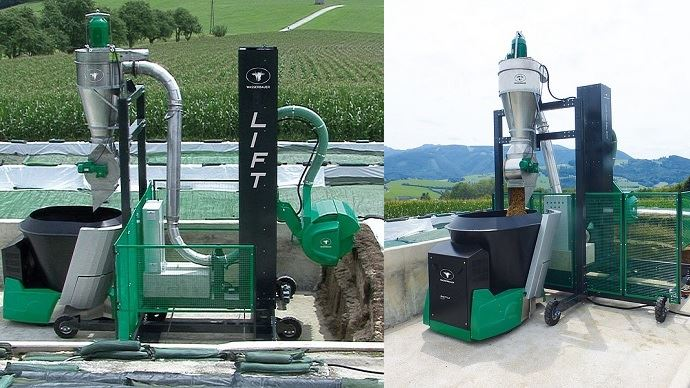

05 juil. 2019
L'entreprise autrichienne Wasserbauer propose aux éleveurs de gagner du temps grâce à son robot d'alimentation qui se sert directement dans les silos. L'éleveur n'a donc plus à désiler ses aliments à l'avance.
Les robots d’alimentation sont déjà bien répandus en élevage. L’entreprise Wasserbauer GMBH innove en proposant au robot d’alimentation capable d’aller se servir directement dans les silos. L’innovation se nomme Lift : il s’agit d’un élévateur à placer devant le couloir. Le système de découpe se sert automatiquement en fourrage et aspire le tout dans le bol.
Cette désileuse automatique s’adapte sur les silos couloir de 5 à 10 m de large et de 4 m de hauteur maximum. Ainsi, plus besoin de désiler du maïs en avance, le fourrage reste frais et les réserves ne chauffent pas. L’entreprise met en avant le faible coût en énergie : « Vous n’avez besoin pour le désilage ni de tracteur, ni de chargeur. Les coûts d’énergie de l’installation Lift sont bas grâce à une alimentation électrique économe et à une supervision de commande unique. » Un inconvénient est tout de même à relever : pour plusieurs silos, un système lift est nécessaire par silo.
Article original : Ici